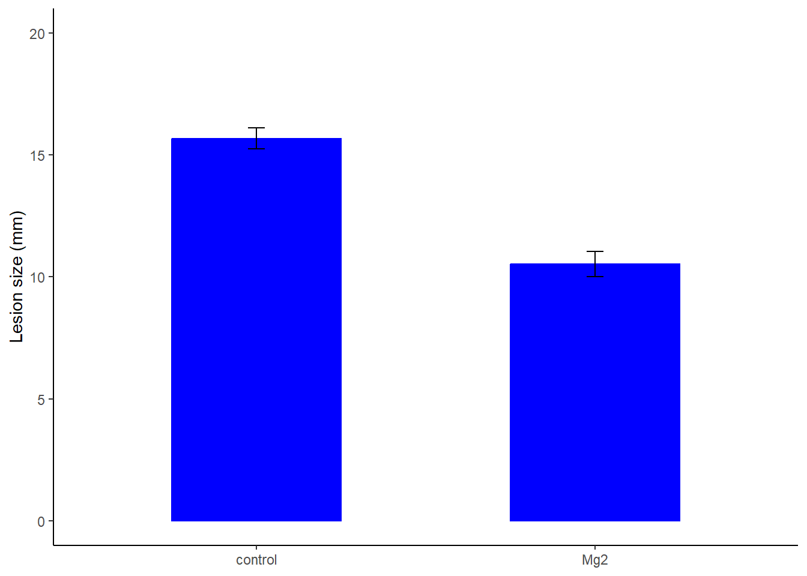

library(tidyverse)
library(readxl)
library(ggplot2)
mg <- read_excel("dados-diversos.xlsx")
mg |>
ggplot(aes(trat, comp))+
geom_jitter(width = 0.05)+
geom_boxplot(fill = NA,
outlier.colour = NA)+
ylim(5, 20)+
annotate(geom = "text",
x = 0.6, y = 20,
label = "p < 0.001 t = 8.12")Teste T
Dataframe precisar ser no formato largo: cada tratamento em uma coluna primeiro
pivot_wider: pega os nomes de tratamento e os valores de comprimento
mg2 <- mg |>
pivot_wider(1,
names_from = trat,
values_from = comp)Teste T
Pacote report mostra como colocar no artigo
t <- t.test(mg2$Mg2, mg2$control)
library(report)
report(t)Effect sizes were labelled following Cohen's (1988) recommendations.
The Welch Two Sample t-test testing the difference between mg2$Mg2 and
mg2$control (mean of x = 10.52, mean of y = 15.68) suggests that the effect is
negative, statistically significant, and large (difference = -5.16, 95% CI
[-6.49, -3.83], t(17.35) = -8.15, p < .001; Cohen's d = -3.65, 95% CI [-5.12,
-2.14])mg |>
ggplot(aes(trat, comp))+
stat_summary(fun.data = "mean_se")
Outro exemplo
mg <- read_excel("dados-diversos.xlsx")dat2 <- mg %>%
group_by(trat) %>%
summarise(
mean_comp = mean(comp),
sd_comp = sd(comp),
var_comp = var(comp),
n = n(),
se_comp = sd_comp / sqrt(n -1),
ci = se_comp * qt(0.975, df = 9) # paramétrico
)dat2 |>
ggplot(aes(trat, mean_comp))+
geom_col(width = 0.5, color = "blue", fill = "blue") +
geom_errorbar(aes(
ymin = mean_comp - se_comp,
ymax = mean_comp + se_comp, width = 0.05)
) +
ylim(0,20)+
theme_classic()+
labs(x = NULL, y = "Lesion size (mm)")
ggsave("figs/barplotfacewrap.png",
bg = "white", width = 6, height= 4)mg2 <- mg %>%
pivot_wider(1, names_from = trat, values_from = comp)paired = grupos independentes.
t <- t.test(mg2$Mg2, mg2$control, paired = F)
library(report)
report(t)Effect sizes were labelled following Cohen's (1988) recommendations.
The Welch Two Sample t-test testing the difference between mg2$Mg2 and
mg2$control (mean of x = 10.52, mean of y = 15.68) suggests that the effect is
negative, statistically significant, and large (difference = -5.16, 95% CI
[-6.49, -3.83], t(17.35) = -8.15, p < .001; Cohen's d = -3.65, 95% CI [-5.12,
-2.14])Homocedesticidade attach separa as variaveis
attach(mg2) # vamos facilitar o uso dos dados
var.test(Mg2, control)
F test to compare two variances
data: Mg2 and control
F = 1.4781, num df = 9, denom df = 9, p-value = 0.5698
alternative hypothesis: true ratio of variances is not equal to 1
95 percent confidence interval:
0.3671417 5.9508644
sample estimates:
ratio of variances
1.478111 Testar normalidade
shapiro.test(Mg2)
Shapiro-Wilk normality test
data: Mg2
W = 0.97269, p-value = 0.9146shapiro.test(control)
Shapiro-Wilk normality test
data: control
W = 0.93886, p-value = 0.5404Análise visual da premissa de normalidade
qqnorm(Mg2)
qqline(Mg2)
qqnorm(control)
qqline(control)
escala <- read_excel("dados-diversos.xlsx", "escala")
head(escala)# A tibble: 6 × 7
assessment rater acuracia precisao vies_geral vies_sistematico vies_constante
<chr> <chr> <dbl> <dbl> <dbl> <dbl> <dbl>
1 Unaided A 0.809 0.826 0.979 1.19 0.112
2 Unaided B 0.722 0.728 0.991 0.922 -0.106
3 Unaided C 0.560 0.715 0.783 1.16 0.730
4 Unaided D 0.818 0.819 0.999 0.948 -0.00569
5 Unaided E 0.748 0.753 0.993 1.10 0.0719
6 Unaided F 0.695 0.751 0.925 0.802 0.336 escala2 <- escala |>
select(assessment, rater, acuracia)
escala3 <- escala2 |>
pivot_wider(1, names_from = assessment, values_from = acuracia)Teste T para amostras pareadas/dependentes
attach(escala3)
t_escala <- t.test(Aided1, Unaided,
paired = TRUE, var.equal = FALSE)
var.test(Aided1, Unaided)
F test to compare two variances
data: Aided1 and Unaided
F = 0.17041, num df = 9, denom df = 9, p-value = 0.01461
alternative hypothesis: true ratio of variances is not equal to 1
95 percent confidence interval:
0.04232677 0.68605885
sample estimates:
ratio of variances
0.1704073 shapiro.test(Aided1)
Shapiro-Wilk normality test
data: Aided1
W = 0.92775, p-value = 0.4261shapiro.test(Unaided)
Shapiro-Wilk normality test
data: Unaided
W = 0.87462, p-value = 0.1131report(t_escala)Effect sizes were labelled following Cohen's (1988) recommendations.
The Paired t-test testing the difference between Aided1 and Unaided (mean
difference = 0.18) suggests that the effect is positive, statistically
significant, and large (difference = 0.18, 95% CI [0.11, 0.26], t(9) = 5.94, p
< .001; Cohen's d = 1.88, 95% CI [0.81, 2.91])wilcox.test(Aided1, Unaided)
Wilcoxon rank sum exact test
data: Aided1 and Unaided
W = 100, p-value = 1.083e-05
alternative hypothesis: true location shift is not equal to 0escala |>
ggplot(aes(assessment, precisao))+
geom_boxplot()escala |>
ggplot(aes())